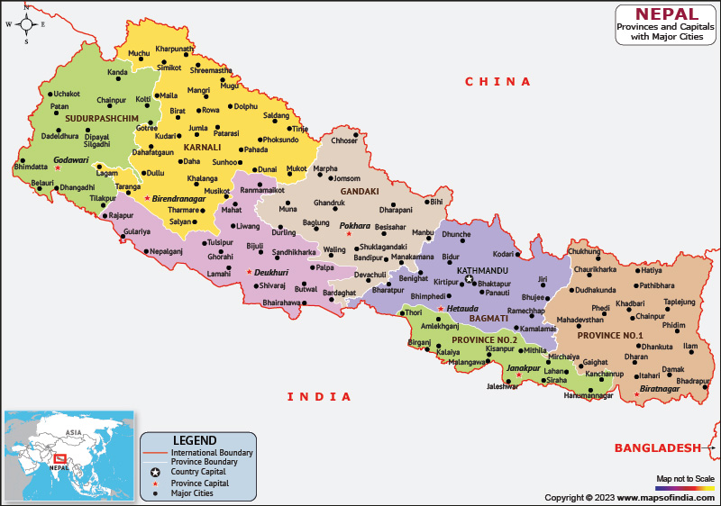

Web Image format with Heritage of Nepal
This website uses Nepal and its Heritage as a simple theme for learning about web image formats. The examples show how different file types can be useful for photographs, transparent graphics, and animation.
The three image pages use JPG, WEBP, and GIF. These formats were selected because they show three different ways images can be stored and displayed on a website.

About This Website
This site uses Nepal as a theme to show three common web image formats. Some of the examples are original and remaining are cited.
Image source:FITY